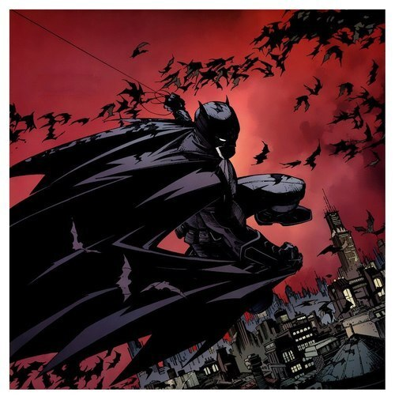
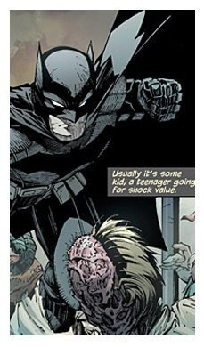
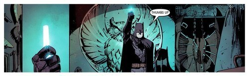

Бэтпост!
Вступление: данный пост совсем не отличается глубоким анализом комикса, сценариста или художника. Это просто скоростная пробежка по сюжету, а так же моя первая попытка написать что-то не о своем времяпрепровождении.

Новый сюжет о Бэтмене однозначно является одним из важнейших из серии DC «52 новинки». Сценаристом выступил Скотт Снайдер, который пишет сюжеты к комиксам про Бэтмена уже не первый раз. До этого он занимался серией Detective Comics, а так же Болотной тварью и немного Суперменом.

Сюжет следующий: Все начинается с убийства, мужчины, где Брюс обнаруживает неприкрытый намек, на то, что ему скоро конец.
Оказывается, Бэтс не всё знает о Готэме, становится одержим своим
расследованием и из-за этого попадает в неприятности.
Я бы сказал, что сюжет совсем не банален. Снайдер написал отличную
историю, в которой хватает всего: детектива, экшена, а так же внутренних
переживаний главного героя.
Почитать переведенные выпуски можно традиционным
способом
.
